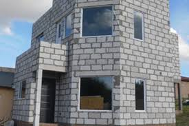

Steel framing
El steel framing es un sistema constructivo abierto, ampliamente utilizado en todo el mundo, en el cual la estructura resistente está compuesta por perfiles de chapa de acero estructural galvanizado de muy bajo espesor, junto a una cantidad de componentes o sub-sistemas (estructurales, aislaciones, terminaciones, etc.) funcionando como un conjunto. Una de las características fundamentales del proceso constructivo es su condición de montaje en seco.
Durlock
Sistema Antihumedad Durlock es un revestimiento exclusivo que permite recuperar la superficie afectada por la humedad mientras la pared respira a través de la cámara de aire, sin que se generen hongos y bacterias. Es la opción ideal para volver a disfrutar de ambientes limpios, saludables y estéticos con el máximo confort que solo Durlock te puede brindar.
Ladrillo comun
“Es un material que es mucho más dócil en comparación al bloc tradicional ya que, si la temperatura es fría afuera, el interior se conserva caliente y lo mismo pasa si hace calor en el exterior”, comentó Valadez. Otras cualidades que el arquitecto resaltó del material es el de ser un excelente aislante de la humedad y además de funcionar como acabado. .
Retak
Los muros hechos de retack brindan una gran aislación del mundo exterior como mencione anteriormente pero eso no es lo único sino que también tiene otras ventajas que lo hacen un excelente material para hacer una construcción solida y de buena calidad.Tiene una absorción muy baja de agua, lo que quiere decir que no absorben demasiada humedad preservando el material en el tiempo; es un material extremadamente ligero lo que lo hace ideal si necesitas una construcción rápida y sin complicaciones.
